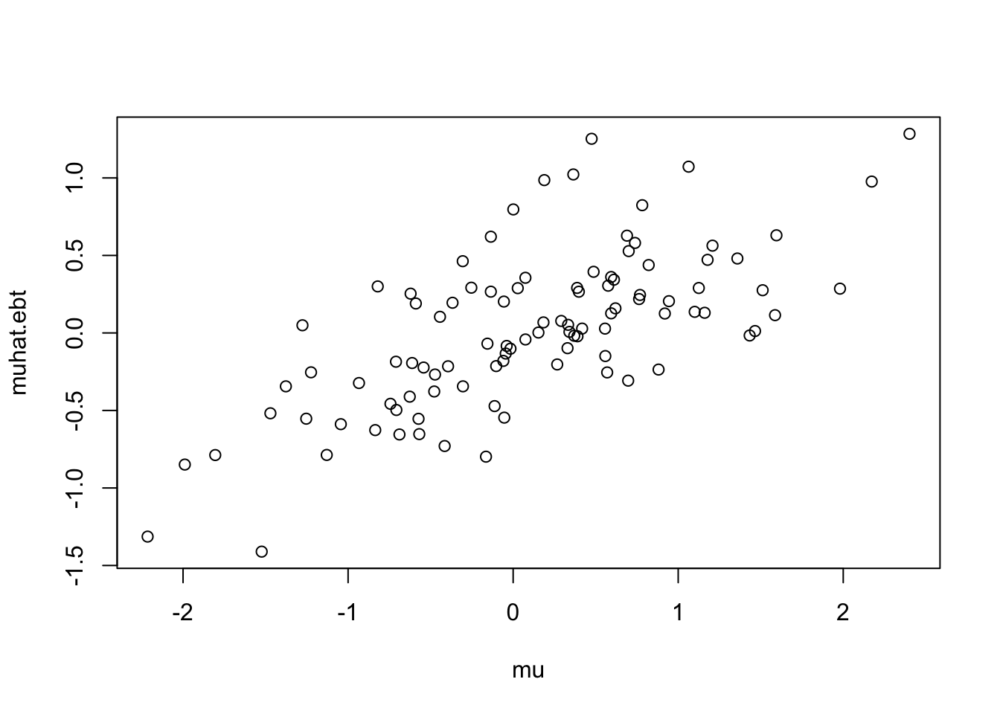
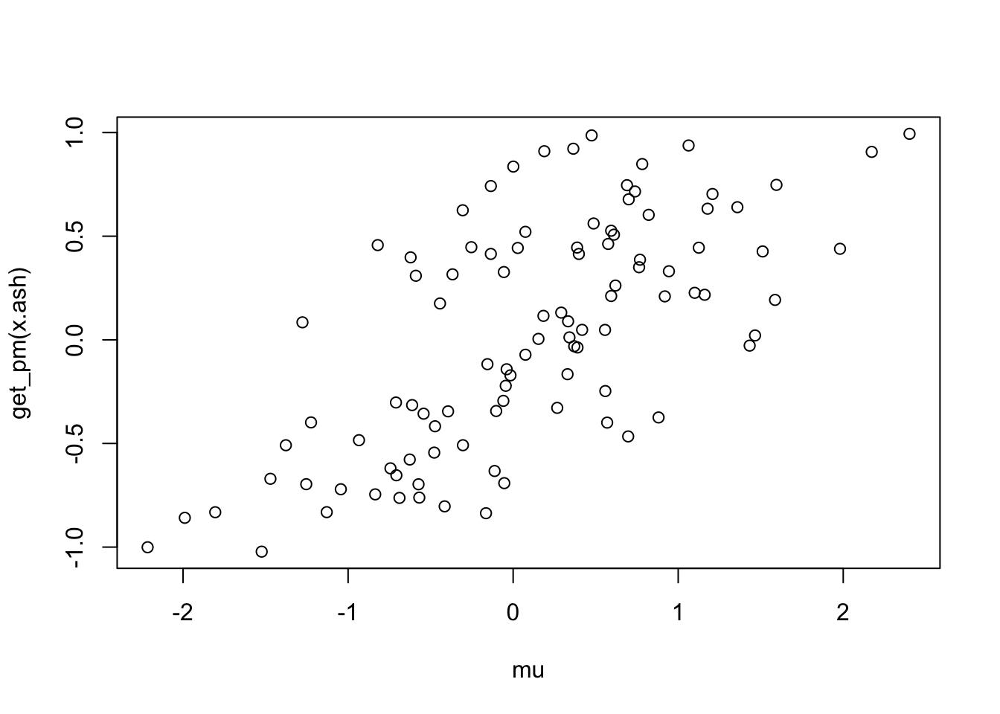

Last updated: 2017-02-27
Code version: ca6d435
The EbayesThresh package implements an Empirical Bayes approach to shrinkage for the normal means problem. There are various options, but the one I am interested in is the Laplace option. Specifically, with this option, the function ebayesthresh solves the following “normal means” problem: Data \(x_1,\dots,x_n\) are assumed to be from \[x_j | \mu_j \sim N(\mu_j,s^2)\] where \[\mu_j \sim \pi_0 \delta_0 + (1-\pi_0) \text{DExp}(a)\] where \(\text{Dexp}(a)\) denotes the double exponential distribution with parameter \(a\).
The Empirical Bayes approach estimates both \(\pi_0\) and \(a\) by maximum likelihood applied to the data \(x_1,\dots,x_n\). Then it estimates each \(\mu_j\) by its posterior mean (or posterior median is also an option).
Here is an example. (Note that setting a=NA indicates that a is to be estimated.)
set.seed(1)
s = 1 # standard error
mu = rnorm(100)
x = mu + rnorm(100,0,s)
muhat.ebt = EbayesThresh::ebayesthresh(x,"laplace",a=NA,sdev=s,threshrule="mean")
plot(mu,muhat.ebt)
mean((mu-x)^2)[1] 0.9097864mean((mu-muhat.ebt)^2)[1] 0.4445512And here is the same idea in ashr package:
library("ashr")
x.ash = ash(x,s,method="shrink")
plot(mu,get_pm(x.ash))
mean((mu-get_pm(x.ash))^2)[1] 0.4441689You can see both methods are effective at reducing the Mean Squared Error compared with the observations \(x\). This is the benefit of “shrinkage”.
There are 3 problems to investigate, perhaps in increasing order of difficulty. All are summarized here.
Here is an example where the mu are very large. What should happen is that a is estimated to be big, and very little shrinkage is performed. But it crashes:
set.seed(1)
mu = rnorm(100,0,20)
x = mu + rnorm(100,0,1)
res=try(EbayesThresh::ebayesthresh(x,"laplace",a=NA,sdev=1,threshrule="mean"))
print(res) #note i have to put it into the try() phrase to avoid my Rmd file crashing....[1] "Error in optim(startpar, negloglik.laplace, method = \"L-BFGS-B\", lower = lo, : \n L-BFGS-B needs finite values of 'fn'\n"
attr(,"class")
[1] "try-error"
attr(,"condition")
<simpleError in optim(startpar, negloglik.laplace, method = "L-BFGS-B", lower = lo, upper = hi, xx = x): L-BFGS-B needs finite values of 'fn'>This is illustrated in the comparisons here. Maybe we can put together a simple example:
set.seed(1)
mu = rnorm(100,0,10)
x = mu + rnorm(100,0,1)
muhat.ebt = EbayesThresh::ebayesthresh(x,"laplace",a=NA,sdev=1,threshrule="mean")
x.ash = ashr::ash(x,1,method="shrink")
mean((muhat.ebt-mu)^2)[1] 0.8907397 mean((get_pm(x.ash)-mu)^2)[1] 0.8854449It is common to have non-homogenous variances: \[x_j | \mu_j \sim N(\mu_j,s_j^2)\]
Can you modify ebayesthresh to allow for this? It seems it should not be too hard in principle, but the details need to be worked out.
sessionInfo()R version 3.3.2 (2016-10-31)
Platform: x86_64-apple-darwin13.4.0 (64-bit)
Running under: OS X El Capitan 10.11.6
locale:
[1] en_US.UTF-8/en_US.UTF-8/en_US.UTF-8/C/en_US.UTF-8/en_US.UTF-8
attached base packages:
[1] stats graphics grDevices utils datasets methods base
other attached packages:
[1] ashr_2.1.5
loaded via a namespace (and not attached):
[1] Rcpp_0.12.9 knitr_1.15.1 magrittr_1.5
[4] workflowr_0.3.0 REBayes_0.73 MASS_7.3-45
[7] doParallel_1.0.10 pscl_1.4.9 SQUAREM_2016.8-2
[10] lattice_0.20-34 foreach_1.4.3 stringr_1.2.0
[13] tools_3.3.2 parallel_3.3.2 grid_3.3.2
[16] EbayesThresh_1.3.2 git2r_0.18.0 htmltools_0.3.5
[19] iterators_1.0.8 assertthat_0.1 yaml_2.1.14
[22] rprojroot_1.2 digest_0.6.12 Matrix_1.2-8
[25] codetools_0.2-15 evaluate_0.10 rmarkdown_1.3
[28] stringi_1.1.2 Rmosek_7.1.2 backports_1.0.5
[31] truncnorm_1.0-7 This R Markdown site was created with workflowr